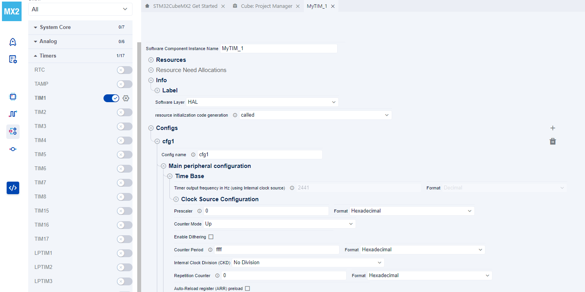
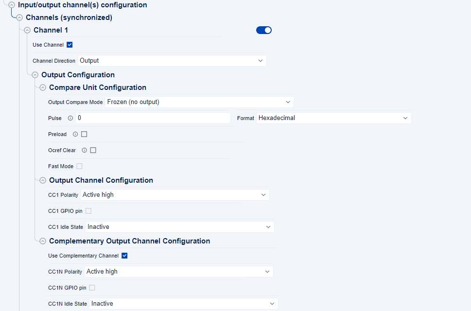
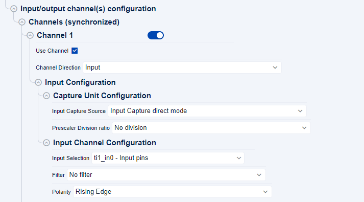
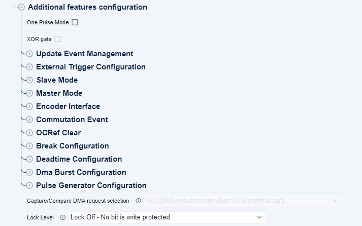
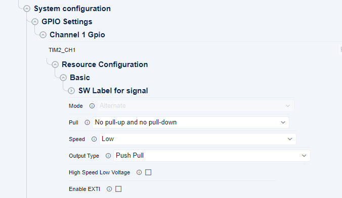
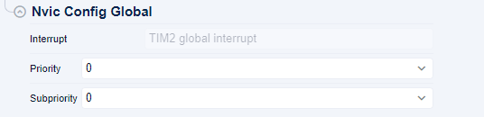
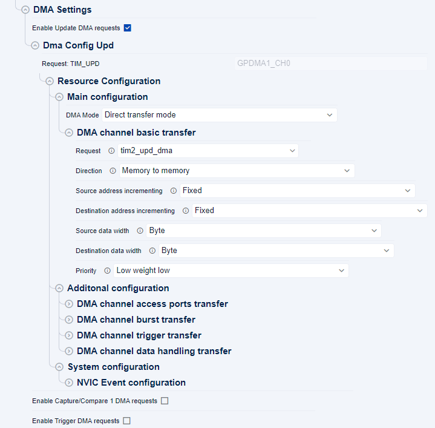

HAL TIM initialization and configuration functions migration ¶
This section provides information about the HAL TIM initialization and configuration functions migration based on MX2
Time base Configuration for TIM ¶


Channel Configuration for TIM ¶
channel output configuration ¶


channel input configuration ¶


Additional features Configuration for TIM ¶


GPIO Configuration for TIM ¶


NVIC Configuration for TIM ¶
The NVIC configuration for TIM enables both event and error interrupts, with each set to priority 0 and subpriority 0.


DMA Configuration for TIM ¶


HAL1 vs HAL2 TIM initialization sequence ¶
Related concept : Split legacy HAL_PPP_Init into Init (build handle object) and config (apply configuration)
Related concept : Remove MspInit and MspDeInit callbacks
|
Description |
HAL1 |
HAL2 |
|---|---|---|
|
Brief |
|
|
|
Example of a code snippet for initializing PWM using DMA |
||
TIM_HandleTypeDef htim1;
DMA_HandleTypeDef h_gpdma_ch7;
**------------------------------------------------------**
/** a section of code generated in the main.c file.*/
/**
* @brief TIM1 Initialization Function
* @param None
* @retval None
*/
static void MX_TIM1_Init(void)
{
TIM_OC_InitTypeDef sConfigOC = {0};
htim1.Instance = TIM1;
htim1.Init.Prescaler = PRESCALER_VALUE;
htim1.Init.CounterMode = TIM_COUNTERMODE_UP;
htim1.Init.Period = PERIOD_VALUE;
htim1.Init.ClockDivision = TIM_CLOCKDIVISION_DIV1;
htim1.Init.RepetitionCounter = 0;
htim1.Init.AutoReloadPreload = TIM_AUTORELOAD_PRELOAD_DISABLE;
if (HAL_TIM_PWM_Init(&htim1) != HAL_OK)
{
Error_Handler();
}
sConfigOC.OCMode = TIM_OCMODE_PWM1;
sConfigOC.Pulse = PULSE1_VALUE;
sConfigOC.OCPolarity = TIM_OCPOLARITY_HIGH;
sConfigOC.OCNPolarity = TIM_OCNPOLARITY_HIGH;
sConfigOC.OCFastMode = TIM_OCFAST_DISABLE;
sConfigOC.OCIdleState = TIM_OCIDLESTATE_RESET;
sConfigOC.OCNIdleState = TIM_OCNIDLESTATE_RESET;
if (HAL_TIM_PWM_ConfigChannel(&htim1, &sConfigOC, TIM_CHANNEL_1) != HAL_OK)
{
Error_Handler();
}
HAL_TIM_MspPostInit(&htim1);
}
/**
* @brief GPDMA1 Initialization Function
* @param None
* @retval None
*/
static void MX_GPDMA1_Init(void)
{
/* USER CODE BEGIN GPDMA1_Init 0 */
/* USER CODE END GPDMA1_Init 0 */
/* Peripheral clock enable */
__HAL_RCC_GPDMA1_CLK_ENABLE();
/* GPDMA1 interrupt Init */
HAL_NVIC_SetPriority(GPDMA1_Channel7_IRQn, 0, 0);
HAL_NVIC_EnableIRQ(GPDMA1_Channel7_IRQn);
/* USER CODE BEGIN GPDMA1_Init 1 */
/* USER CODE END GPDMA1_Init 1 */
/* USER CODE BEGIN GPDMA1_Init 2 */
/* USER CODE END GPDMA1_Init 2 */
}
/**
* @brief GPIO Initialization Function
* @param None
* @retval None
*/
static void MX_GPIO_Init(void)
{
/* USER CODE BEGIN MX_GPIO_Init_1 */
/* USER CODE END MX_GPIO_Init_1 */
/* GPIO Ports Clock Enable */
__HAL_RCC_GPIOA_CLK_ENABLE();
/* USER CODE BEGIN MX_GPIO_Init_2 */
/* USER CODE END MX_GPIO_Init_2 */
}
**------------------------------------------------------**
**------------------------------------------------------**
/** a section of code generated in the stm32xx_hal_msp.c file.*/
void HAL_TIM_PWM_MspInit(TIM_HandleTypeDef* htim_pwm)
{
if(htim_pwm->Instance==TIM1)
{
/* USER CODE BEGIN TIM1_MspInit 0 */
/* USER CODE END TIM1_MspInit 0 */
/* Peripheral clock enable */
__HAL_RCC_TIM1_CLK_ENABLE();
/* TIM1 DMA Init */
/* GPDMA1_REQUEST_TIM1_CH1 Init */
h_gpdma_ch7.Instance = GPDMA1_Channel7;
h_gpdma_ch7.Init.Request = GPDMA1_REQUEST_TIM1_CH1;
h_gpdma_ch7.Init.Direction = DMA_PERIPH_TO_MEMORY;
h_gpdma_ch7.Init.SrcInc = DMA_SINC_FIXED;
h_gpdma_ch7.Init.DestInc = DMA_DINC_FIXED;
h_gpdma_ch7.Init.SrcDataWidth = DMA_SRC_DATAWIDTH_BYTE;
h_gpdma_ch7.Init.DestDataWidth = DMA_DEST_DATAWIDTH_BYTE;
h_gpdma_ch7.Init.Priority = DMA_LOW_PRIORITY_LOW_WEIGHT;
h_gpdma_ch7.Init.Mode = DMA_NORMAL;
if (HAL_DMA_Init(&h_gpdma_ch7) != HAL_OK)
{
Error_Handler();
}
__HAL_LINKDMA(htim_pwm,hdma[TIM_DMA_ID_CC3],hdma_tim1_ch3);
/* USER CODE BEGIN TIM1_MspInit 1 */
/* USER CODE END TIM1_MspInit 1 */
}
}
void HAL_TIM_MspPostInit(TIM_HandleTypeDef* htim)
{
GPIO_InitTypeDef GPIO_InitStruct = {0};
if(htim->Instance==TIM1)
{
/* USER CODE BEGIN TIM1_MspPostInit 0 */
/* USER CODE END TIM1_MspPostInit 0 */
__HAL_RCC_GPIOA_CLK_ENABLE();
/**TIM1 GPIO Configuration
PB0 ------> TIM1_CH3
*/
GPIO_InitStruct.Pin = GPIO_PIN_0;
GPIO_InitStruct.Mode = GPIO_MODE_AF_PP;
GPIO_InitStruct.Pull = GPIO_PULLUP;
GPIO_InitStruct.Speed = GPIO_SPEED_FREQ_VERY_HIGH;
GPIO_InitStruct.Alternate = GPIO_AF2_TIM1;
HAL_GPIO_Init(GPIOA, &GPIO_InitStruct);
/* USER CODE BEGIN TIM1_MspPostInit 1 */
/* USER CODE END TIM1_MspPostInit 1 */
}
}
/**
* @brief TIM_PWM MSP De-Initialization
* This function freeze the hardware resources used in this example
* @param htim_pwm: TIM_PWM handle pointer
* @retval None
*/
void HAL_TIM_PWM_MspDeInit(TIM_HandleTypeDef* htim_pwm)
{
if(htim_pwm->Instance==TIM1)
{
/* USER CODE BEGIN TIM1_MspDeInit 0 */
/* USER CODE END TIM1_MspDeInit 0 */
/* Peripheral clock disable */
__HAL_RCC_TIM1_CLK_DISABLE();
/* TIM1 DMA DeInit */
HAL_DMA_DeInit(htim_pwm->hdma[TIM_DMA_ID_CC3]);
/* USER CODE BEGIN TIM1_MspDeInit 1 */
/* USER CODE END TIM1_MspDeInit 1 */
}
}
**------------------------------------------------------**
**------------------------------------------------------**
/** a section of code generated in the stm32xx_it.c file.*/
/**
* @brief This function handles GPDMA1 Channel 7 global interrupt.
*/
void GPDMA1_Channel7_IRQHandler(void)
{
/* USER CODE BEGIN GPDMA1_Channel7_IRQn 0 */
/* USER CODE END GPDMA1_Channel7_IRQn 0 */
HAL_DMA_IRQHandler(&h_gpdma_ch7);
/* USER CODE BEGIN GPDMA1_Channel7_IRQn 1 */
/* USER CODE END GPDMA1_Channel7_IRQn 1 */
}
|
hal_tim_handle_t hTIM1;
hal_dma_handle_t hGPDMA1_CH7;
hal_tim_handle_t *mx_tim1_hal_init(void)
{
hal_tim_config_t config;
if (HAL_TIM_Init(&hTIM1, HAL_TIM1) != HAL_OK)
{
return NULL;
}
HAL_RCC_TIM1_EnableClock();
/* Timer configuration to reach the output frequency at 2441 Hz */
config.prescaler = 0;
config.counter_mode = HAL_TIM_COUNTER_UP;
config.period = 0xFFFF;
config.clock_division = HAL_TIM_CLK_DIVISION_DIV1;
config.repetition_counter = 0;
config.clock_sel.clock_source = HAL_TIM_CLK_INTERNAL;
if (HAL_TIM_SetConfig(&hTIM1, &config) != HAL_OK)
{
return NULL;
}
/* Configure Channels */
hal_tim_oc_channel_config_t oc_config;
oc_config.polarity = HAL_TIM_OC_HIGH;
oc_config.idle_state = HAL_TIM_OC_IDLE_STATE_RESET;
if (HAL_TIM_OC_SetConfigChannel(&hTIM1, HAL_TIM_CHANNEL_1, &oc_config) != HAL_OK)
{
return NULL;
}
hal_tim_oc_compare_unit_config_t oc_compare_unit_config;
oc_compare_unit_config.mode = HAL_TIM_OC_PWM1;
oc_compare_unit_config.pulse = 0x00000000;
if (HAL_TIM_OC_SetConfigCompareUnit(&hTIM1, hal_tim_oc_channel_to_compare_unit(HAL_TIM_CHANNEL_1),
&oc_compare_unit_config) != HAL_OK)
{
return NULL;
}
HAL_RCC_GPDMA1_EnableClock();
/* Enable the interruption for GPDMA1_CH7 */
HAL_CORTEX_NVIC_SetPriority(GPDMA1_CH7_IRQn, HAL_CORTEX_NVIC_PREEMP_PRIORITY_0, HAL_CORTEX_NVIC_SUB_PRIORITY_0);
HAL_CORTEX_NVIC_EnableIRQ(GPDMA1_CH7_IRQn);
if (HAL_DMA_Init(&hGPDMA1_CH7, HAL_GPDMA1_CH7) != HAL_OK)
{
return NULL;
}
hal_dma_direct_xfer_config_t xfer_cfg1;
xfer_cfg1.request = HAL_GPDMA1_REQUEST_TIM15_CC1;
xfer_cfg1.direction = HAL_DMA_DIRECTION_MEMORY_TO_MEMORY;
xfer_cfg1.src_inc = HAL_DMA_SRC_ADDR_FIXED;
xfer_cfg1.dest_inc = HAL_DMA_DEST_ADDR_FIXED;
xfer_cfg1.src_data_width = HAL_DMA_SRC_DATA_WIDTH_BYTE;
xfer_cfg1.dest_data_width = HAL_DMA_DEST_DATA_WIDTH_BYTE;
xfer_cfg1.priority = HAL_DMA_PRIORITY_LOW_WEIGHT_LOW;
if (HAL_DMA_SetConfigPeriphDirectXfer(&hGPDMA1_CH7, &xfer_cfg1) != HAL_OK)
{
return NULL;
}
/* Link Capture/Compare 1 DMA requests handle to the TIM handle */
if (HAL_TIM_SetDMA(&hTIM1, HAL_TIM_DMA_ID_CC1, &hGPDMA1_CH7) != HAL_OK)
{
return NULL;
}
return &hTIM1;
}
/* GPIO configuration for channel1 */
HAL_RCC_GPIOA_EnableClock();
hal_gpio_config_t gpio_config;
/**
TIM1 GPIO Configuration
HW labels: PA8 GPIO Configuration
PA8 ---------> TIM1_CH1
**/
gpio_config.mode = HAL_GPIO_MODE_ALTERNATE;
gpio_config.output_type = HAL_GPIO_OUTPUT_PUSHPULL;
gpio_config.pull = HAL_GPIO_PULL_NO;
gpio_config.speed = HAL_GPIO_SPEED_FREQ_LOW;
gpio_config.alternate = HAL_GPIO_AF_1;
HAL_GPIO_Init(HAL_GPIOA, HAL_GPIO_PIN_8, &gpio_config);
void mx_tim1_hal_deinit(void)
{
(void)HAL_TIM_DeInit(&hTIM1);
HAL_RCC_TIM1_Reset();
HAL_RCC_TIM1_DisableClock();
/* ### GPIO pins de-initialization ################################# */
/* Deinitialization of TIM1: TIM1_CH1 */
HAL_GPIO_DeInit(HAL_GPIOA, HAL_GPIO_PIN_8);
/* De-initialize the DMA channel */
HAL_DMA_DeInit(&hGPDMA1_CH7);
/* Disable the interruption for DMA */
HAL_CORTEX_NVIC_DisableIRQ(GPDMA1_CH7_IRQn);
}
hal_tim_handle_t *mx_tim1_hal_gethandle(void)
{
return &hTIM1;
}
/******************************************************************************/
/* GPDMA1 channel7 global interrupt */
/******************************************************************************/
void GPDMA1_CH7_IRQHandler(void)
{
HAL_DMA_IRQHandler(&hGPDMA1_CH7);
}
|